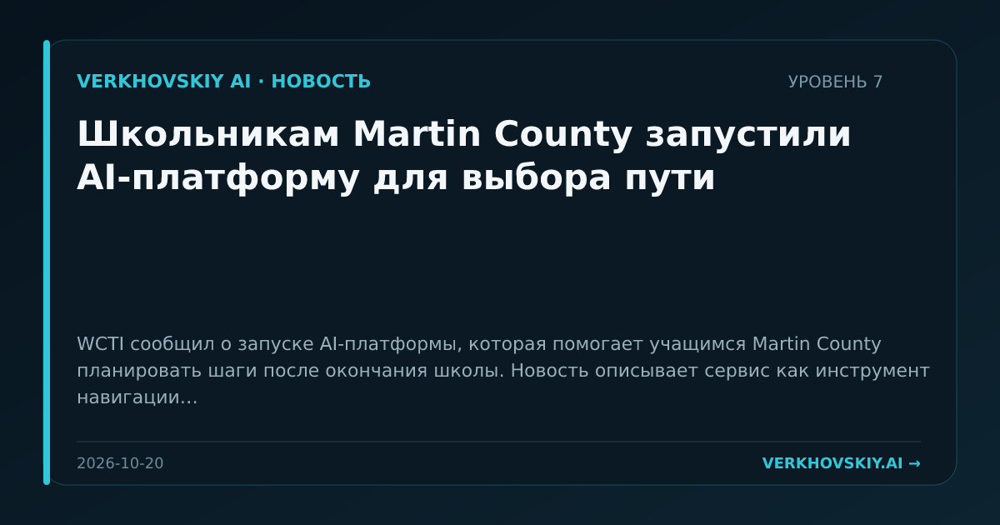

Школьникам Martin County запустили AI-платформу для выбора пути
WCTI сообщил о запуске AI-платформы, которая помогает учащимся Martin County планировать шаги после окончания школы. Новость описывает сервис как инструмент навигации по послешкольным планам. Почему это важно: AI начинает входить в раннюю профориентацию, где формируются будущие траектории труда и образования. Это переносит алгоритмическое посредничество на этап до университета и рынка труда.